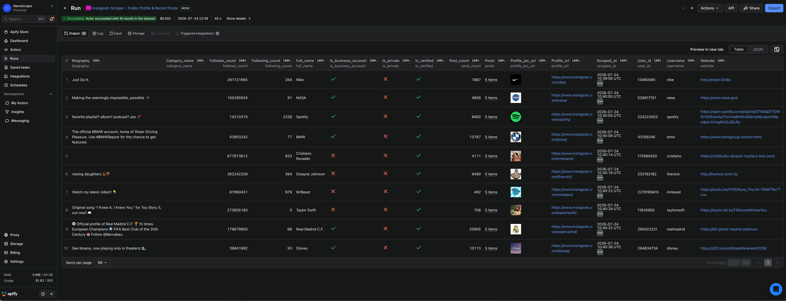
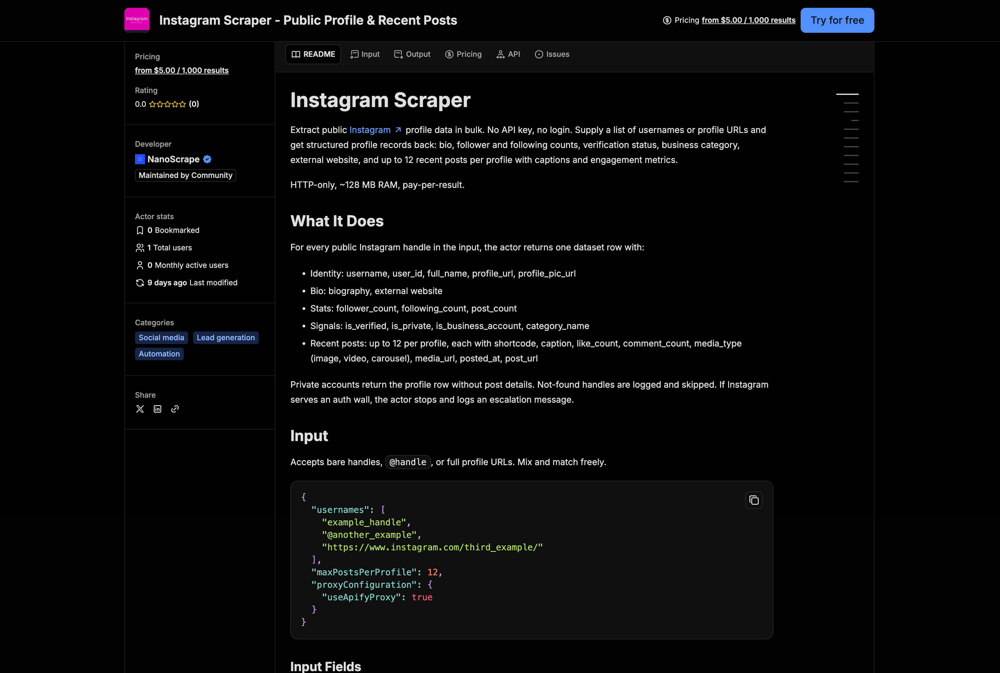
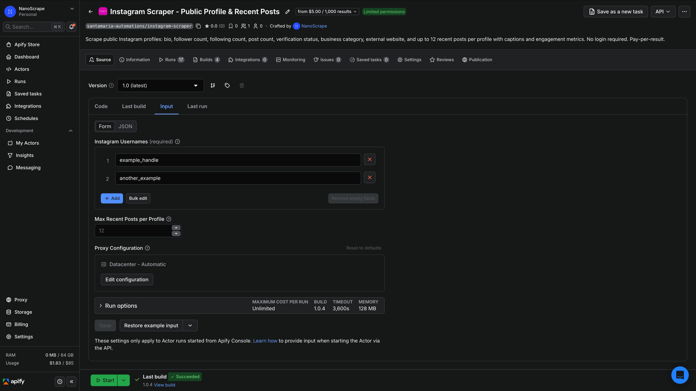
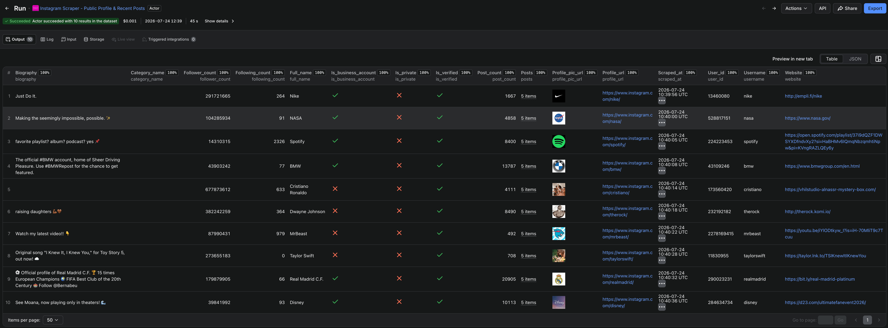

How to Scrape Instagram: Extract Public Profiles and Posts Without a Login
Supply a list of Instagram handles and get back structured JSON for each one: bio, follower and following counts, verification status, business category, external website, and up to 12 recent posts with captions and engagement metrics. HTTP-only, no browser, no login, no Instagram API key. About $5 per 1,000 profiles.

In this tutorial
What you get
For every public Instagram handle you submit, the actor returns one structured record containing:
- Identity: username, user ID, full name, profile URL, profile picture URL
- Bio: biography text, external website link
- Stats: follower count, following count, total post count
- Signals: verification status, private/public flag, business account flag, business category
- Recent posts: up to 12 posts per profile, each with shortcode, caption, like count, comment count, media type (image, video, or carousel), media URL, post URL, and posted date
Private accounts return the profile row (stats and bio) but no post details. Non-existent handles are logged and skipped so your dataset stays clean. The actor is HTTP-only and runs at roughly 128 MB RAM, so it starts in seconds and costs very little at scale.
Prerequisites
- A free Apify account. Sign up at the actor page. The free tier gives you $5 of usage credit every month, enough for around 1,000 profile scrapes.
- A list of Instagram handles,
@handlereferences, or full profile URLs you want to scrape. You can mix and match formats freely.
Open the actor on Apify
- Open the NanoScrape Instagram Scraper on Apify.
- Click Try for free. Sign up with Google or email if you do not have an account. It takes about a minute.
- Apify redirects you to the actor input page in Apify Console.

Set your input
In Apify Console, the actor's Input tab shows a JSON editor. Paste your handles in the usernames array. You can use bare handles, @handle format, or full profile URLs. The actor normalizes them all.
{
"usernames": [
"natgeo",
"@nasa",
"https://www.instagram.com/bbcnews/"
],
"maxPostsPerProfile": 12,
"proxyConfiguration": {
"useApifyProxy": true
}
}The three fields that matter most:
usernames(required): an array of handles, @-prefixed handles, or full Instagram profile URLs. Mix and match freely.maxPostsPerProfile: 0 to 12. Set to0if you only need profile stats and want to skip fetching recent posts entirely. Reducing this number also speeds up large runs.proxyConfiguration: leave the default (useApifyProxy: true). Datacenter proxies are sufficient for most runs.

maxPostsPerProfile to 0 when you only care about follower counts, bios, and profile signals. The run finishes faster and costs the same per profile.Run and download results
- Click Start at the bottom of the input page.
- Apify shows a live run log. For a batch of up to 100 handles, the run typically finishes in under two minutes.
- When the status changes to Succeeded, click Results in the top tab bar to open the dataset.
- Use the Export button to download as JSON, JSONL, CSV, or XLSX. You can also read the dataset programmatically via the Apify API or an automation tool like n8n.

Each row is one profile record. Here is an example based on the output format documented in the actor README (no live run was performed; the structure is taken directly from the actor's documented output schema):
{
"username": "example_handle",
"user_id": "1234567890",
"full_name": "Example Company",
"biography": "Example bio for a public Instagram profile.",
"website": "https://example.com",
"follower_count": 125000,
"following_count": 420,
"post_count": 1830,
"is_verified": true,
"is_private": false,
"is_business_account": true,
"category_name": "Retail Company",
"profile_pic_url": "https://scontent.cdninstagram.com/example.jpg",
"posts": [
{
"shortcode": "CxAmpleAbc",
"caption": "Example post caption.",
"like_count": 1200,
"comment_count": 34,
"media_type": "image",
"media_url": "https://scontent.cdninstagram.com/example_media.jpg",
"posted_at": "2026-07-01T12:00:00Z",
"post_url": "https://www.instagram.com/p/CxAmpleAbc/"
}
],
"profile_url": "https://www.instagram.com/example_handle/",
"scraped_at": "2026-07-24T09:00:00Z"
}Output field reference
Every profile record in the dataset contains these fields:
username: the Instagram handle as scrapeduser_id: Instagram's internal numeric user ID. Stable even if the handle changes.full_name: display name shown on the profilebiography: the text in the bio sectionwebsite: the external link in the bio (if set)follower_count,following_count,post_count: current counts at scrape timeis_verified:trueif the blue checkmark badge is presentis_private:truefor private accounts (no post details returned)is_business_account:truefor creator or business profilescategory_name: the business category string (e.g. "Retail Company", "Musician/Band")profile_pic_url: CDN URL for the profile photoprofile_url: canonical Instagram URL for the profile. Use this as a join key.posts: array of up tomaxPostsPerProfilerecent posts. Empty array for private accounts or whenmaxPostsPerProfileis 0.scraped_at: ISO 8601 timestamp of when this record was written
Each entry in posts contains: shortcode, caption, like_count, comment_count, media_type (image, video, or carousel), media_url, posted_at, and post_url.
Private accounts and auth walls
The actor can only scrape publicly available data. Two edge cases to be aware of:
- Private accounts: the actor returns the profile row (follower count, bio, verification) but skips post details.
is_privatewill betruein the record. - Auth walls: Instagram occasionally serves a login-required page to unauthenticated traffic at higher volumes. When this happens, the actor stops immediately and logs an escalation message rather than silently returning empty data. If you see this, split your batch into smaller runs or add a delay between runs.
Use with n8n, Make, or Zapier
You can call the Instagram Scraper from any automation tool that supports the Apify API or the official Apify nodes. The approach is the same whether you are using n8n, Make, or Zapier.
n8n
Install the Apify n8n node (pre-installed on n8n Cloud; available via Community Nodes on self-hosted). Add a Run an Actor and get dataset node, enter your Apify credential, set the Actor ID to santamaria-automations/instagram-scraper, and paste the input JSON. The node waits for the run to finish and returns the dataset items as an array you can pipe into a Google Sheets Append node, a database node, or an HTTP Request.
Prefer a no-code trigger? Swap the Manual Trigger for a Schedule Trigger and n8n will run the scrape on a schedule, keeping your dataset up to date automatically. Use an n8n Cloud account if you want a managed, always-on instance with no maintenance overhead.
Make (formerly Integromat)
Use the HTTP module to call the Apify REST API directly. POST to https://api.apify.com/v2/acts/santamaria-automations~instagram-scraper/run-sync-get-dataset-items?token=YOUR_TOKEN with your input JSON as the request body. Make returns the full dataset as a parsed JSON array in one step.
Zapier
Use a Webhooks by Zapier POST action to call the same Apify run-sync endpoint. The JSON response body contains the dataset items, which you can route to a Google Sheet or any other Zap action.
run-sync-get-dataset-items endpoint blocks until the run finishes, which works well for batches up to a few hundred handles. For larger batches, use the async /runs endpoint to start the actor, then poll /datasets/{datasetId}/items once the run status is SUCCEEDED.Use with AI agents via MCP
The actor is available as an MCP tool for AI clients that support the Model Context Protocol: Claude Desktop, Claude.ai, Cursor, VS Code, LangChain, LlamaIndex, and others. Connect it by adding this server URL to your MCP configuration:
https://mcp.apify.com?tools=santamaria-automations/instagram-scraper
Once connected, you can ask your AI agent things like:
- "Fetch the follower count, bio, and latest 5 posts for these 20 handles and summarize the engagement rate per post."
- "Scrape these competitor Instagram accounts and give me a table of follower counts and verification status."
- "Pull the recent posts for @nasa and tell me which ones got the most likes last week."
Clients that support dynamic tool discovery (Claude.ai, VS Code) receive the full input schema automatically via add-actor, so you do not need to configure anything beyond the server URL.
What it costs
- Actor start: $0.001 per run (one charge when the run begins, regardless of batch size).
- Per profile scraped: $0.005 per profile row written to the dataset. A batch of 100 profiles costs $0.50 plus $0.001 to start.
- Free tier: Apify gives you $5 of usage credit every month, which covers around 1,000 profile scrapes.
Pricing is pay-per-event with no monthly minimum. For 1,000 profiles in one run, you pay roughly $0.001 (start) + 1,000 x $0.005 (results) = $5.001. For 100 profiles per day over a month, that works out to about $15 per month.
FAQ
Do I need an Instagram account or API key to use this scraper?
No. The actor reads publicly available Instagram data over HTTP. You do not need a personal Instagram login, a Meta developer app, or any Instagram-issued credentials. A free Apify account is all you need.
Can I scrape private Instagram accounts?
No. Private accounts are accessible only to approved followers. The actor returns the profile row (follower count, bio, verification) for private accounts but cannot retrieve post details. The is_private field in the output will be true.
How many posts per profile can I get?
Up to 12 recent posts per profile, controlled by the maxPostsPerProfile input field (accepts 0 to 12). Set it to 0 if you only need profile-level stats and want to skip posts.
What happens if a handle does not exist?
The actor logs a warning for that handle and continues processing the rest of the batch. Non-existent handles are not written to the dataset, so your output stays clean.
What if Instagram shows an auth wall during a run?
If Instagram temporarily requires login for unauthenticated traffic, the actor stops immediately and logs an escalation message. It does not silently return empty data. Try splitting your batch into smaller runs, or wait a few hours and retry.
Is scraping public Instagram data legal?
Scraping publicly available data is generally permitted in most jurisdictions. The hiQ Labs v. LinkedIn ruling in the US established that scraping public data does not violate the Computer Fraud and Abuse Act. That said, Meta's Terms of Service restrict automated scraping, and the legal picture varies by country and use case. If you plan to use the data commercially or at high volume, consult a lawyer.
Can I run this on a schedule?
Yes. In Apify Console, open the actor and click the Schedules tab to set up a recurring run. From n8n, replace the Manual Trigger with a Schedule Trigger. The scraper treats duplicate handles in the input the same way every run, so you can re-scrape the same list each day to track changes over time.
How do I use the output with Google Sheets?
In n8n, wire an Append to Google Sheet node after the Apify Run an Actor and get dataset node. The dataset items flow directly into it. Alternatively, download the dataset as CSV from the Apify Console and import it into Sheets manually.
Related resources
- Instagram Scraper actor page: Full specs, pricing tiers, all fields, and comparison with alternatives.
- Instagram Scraper on Apify: Actor's README, input schema, and complete field reference on Apify Store.
- Website Contact Extractor: Enrich profiles that list an external website by extracting team emails, phones, and names.
- LinkedIn Company Scraper: Add LinkedIn company data to complement your Instagram research.
- How to Scrape Google Maps with n8n: Build a no-code Google Maps pipeline with a free n8n template.